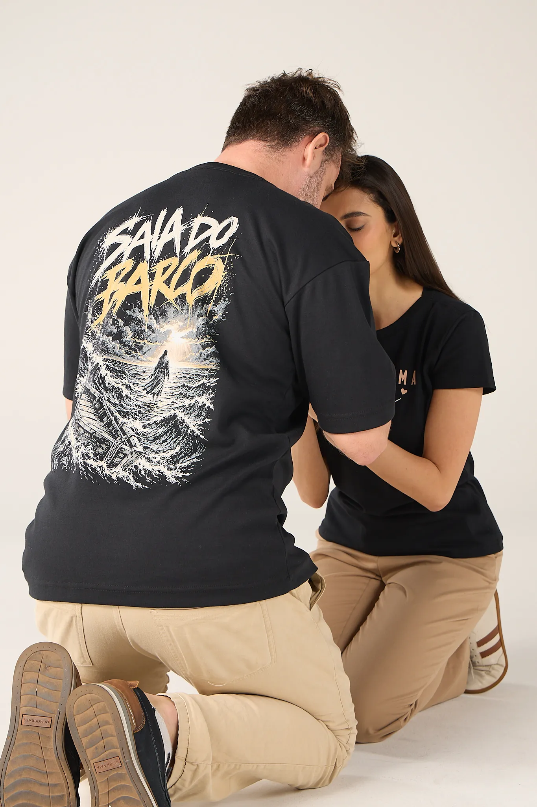

sobre a marca
Sê Tu.
Não quem o mundo quer que você seja. Não quem o medo moldou. Mas quem Deus disse que você é, antes do mundo falar mais alto.
o símbolo
Não há duas digitais iguais no mundo.
Cada linha da sua foi feita à mão, por mãos que te conheciam pelo nome antes que você soubesse o seu.
no centro
Uma cruz.
Sua identidade está ancorada em algo maior que você. Não no que você fez, mas no que Ele fez.
a convicção
Identidade não se constrói. Revela-se.
-
o propósito
Alcançar vidas.
Alcançar o perdido, o quebrado e o excluído, sem julgamento e sem pregação forçada. Só o amor radical de Jesus, dizendo a cada um: você foi encontrado, você é conhecido, você é chamado pelo nome.
Você não está onde está por acidente. Deus tem um plano para você.
-
de onde vem o nome
Deus chama Abraão para sair da sua terra natal e promete abençoá-lo grandemente. O chamado é: sê tu uma bênção. Não apenas ser abençoado por Deus, mas se tornar um canal para abençoar outras pessoas e outras famílias na terra.
-
na contramão
O que o mundo fala sobre quem você é.
- desempenho e sucesso
- a opinião e aprovação dos outros
- os seus erros e limitações
- consumo e aparência
Enquanto a palavra de Deus afirma quem você já é, antes mesmo de qualquer realização.
-
o jeito Sê Tu
Beleza primeiro, mensagem dentro.
A estampa funciona como arte mesmo sem contexto religioso. A mensagem não anuncia. Ela é tão verdadeira que quem vive aquilo reconhece.
Quem não é cristão sente algo. Compra pela beleza, sem saber explicar de onde vem o peso daquela peça.
Quem é cristão entende tudo. Reconhece o versículo no avesso, no pescocinho: a mensagem escondida à vista.
-
por que esse tema
A palavra tem poder. Por muito tempo, ainda criança, ouvi palavras que pesaram, que me fizeram ter medo de agir, de arriscar, de me enxergar como alguém capaz.
A Sê Tu existe para lembrar: a nossa identidade está em Cristo. Não importa aquilo que o Senhor tem falado sobre você. Você já é filha amada. Escolhida. Separada. Luz do mundo.

a camiseta está pronta
Ouça a voz que te chama para perto.
Conheça a primeira coleção e acompanhe os próximos passos da marca.